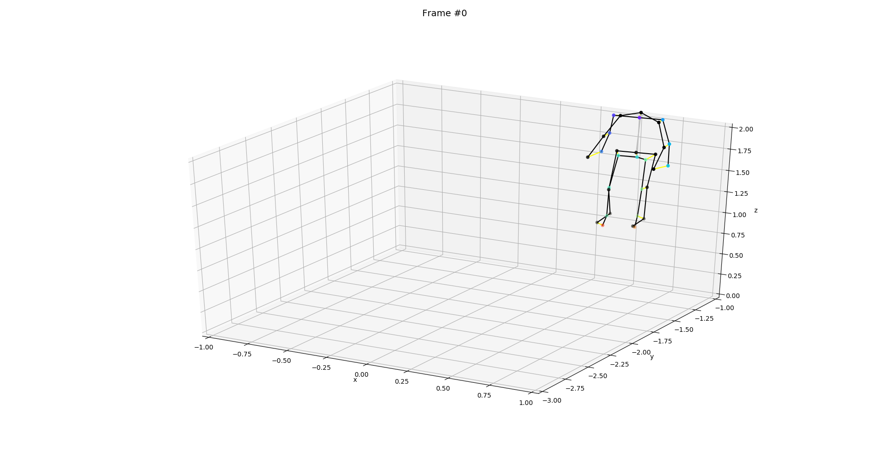

Implementation of HPE optimization on Human 3.6M dataset
Last month, the plan included to apply our synthetic datasets to other methodologies and compare the obtained values to ours. However, the implementation of other algorithms was proving to be very time-consuming and not producing usable data. So, considering this, the initial plan was changed to apply our algorithm to the Human 3.6M dataset instead and use the metrics already presented in other papers (MPJPE error) to evaluate our algorithm and therefore compare the results to other algorithms that used the same dataset.
Human 3.6M dataset
This dataset has is very generic and can be used in several fields of work, since it is divided into different actions, has 4 cameras with extrinsic and extrinsic values and has the ground truth for the 3D poses as well.
For the sake of this blog, I will only be using the action Directions-1 from sector 1.
Since this dataset is formatted differently, I tried to make the implementation as general as possible, and adapted my code to be able to read both dataset formats. I also created a script that converts the ground truth to a python dictionary, similar to the one created from the gazebo values in my own produced datasets.
Evaluation metrics from my evaluation scripts
Disclaimer: please be aware that these are preliminary results (that I just obtained) and I still didn't look for the sources of error or evaluated the obtained results.
Detectors evaluation
The image bellow shows an example of the detectors' evaluation visualization, where the squares are the ground truth points from human 3.6M and the crosses are the detected points by OpenPose.
The following tables show the average results per joint and per frame for an example of 10 frames (extended tables are available but very extensive for 4 cameras and 10 frames, so they are not presented here). These results are in pixels and the presented images have a resolution of 1000x1000pix.
3D evaluation
The following image shows the 3D plot of the ground truth skeleton (black) and detected skeleton (colored) for the example of one frame.
The next table shows the average errors per joint and per frame in meters for the 3D position of the detected skeleton when compared with the ground truth using for cameras.
On-going tasks
- Adding the link length restrictions to optimization (optimization weights are very low when compared to other algorithms - need fixing)
- Calibrate an entire video and output a video of the 3D pose
- Discuss the possibility of describing the skeleton with Denavit–Hartenberg parameters
- Compare with different algorithms
- Improve first guess with last frame optimized skeleton in case of consecutive frames
- Implementation of human 3.6M
- Evaluation with state-of-the-art metrics (MPJPE)
Issues
- Optimize entire video and output result video - open
- Apply to Human 3.6M - open
- Evaluation metrics - open
- Create more diverse datasets - open
- Find more algorithms for comparison - open
- Add link length to objective function - open
- Adding arguments to optimization script - open
- Initialize with a more accurate first guess - open
- Include evaluation tables during optimization enhancement- open
- Comparison algorithms: MotionBert - open
- Comparison algorithms: MixSTE - open
- Comparison algorithms: OpenPose 3D - open